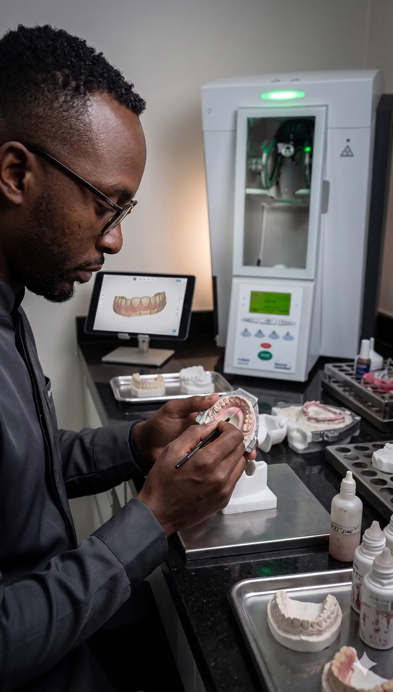
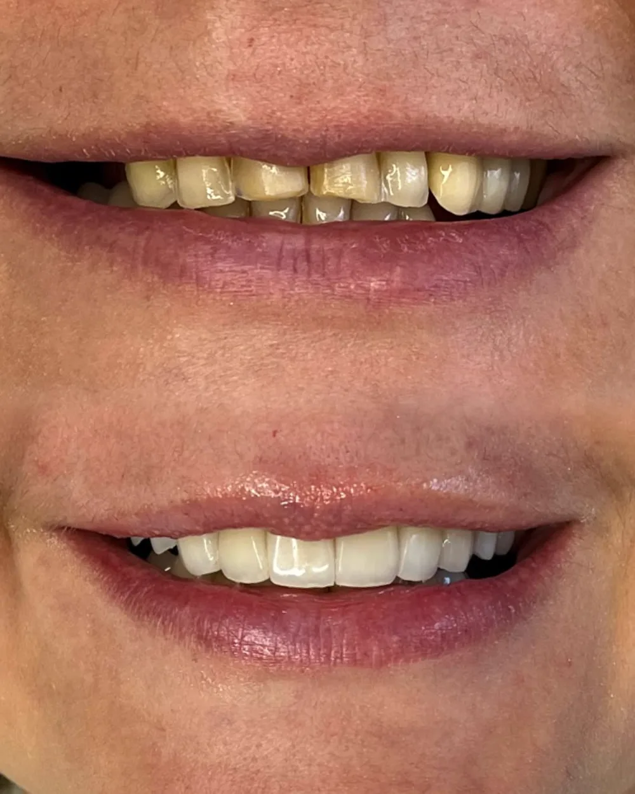
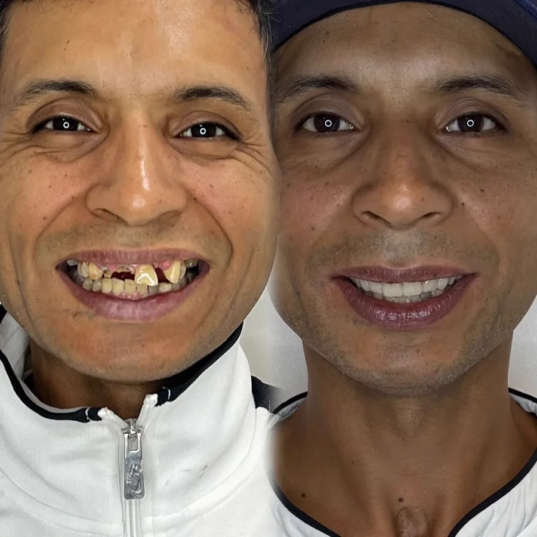
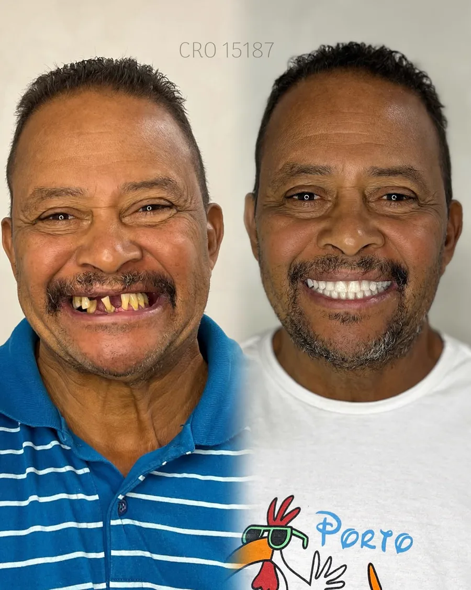
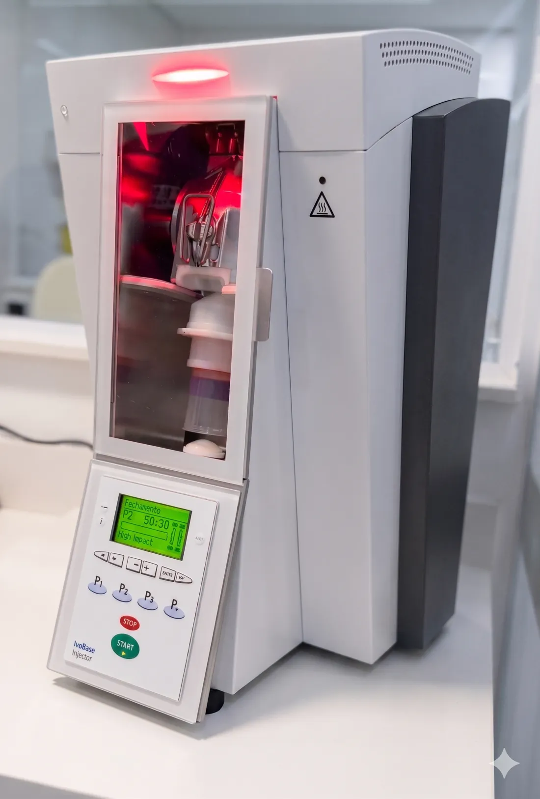

Implante unitário
Alternativa para substituir um dente ausente, após avaliação da região e das condições para o procedimento.
Uma avaliação cuidadosa para entender sua necessidade, planejar cada etapa e indicar a alternativa de reabilitação mais adequada ao seu caso.

A indicação depende da avaliação clínica, da condição bucal e dos exames necessários. A equipe explica as opções antes de qualquer decisão.
Alternativa para substituir um dente ausente, após avaliação da região e das condições para o procedimento.
Planejamento para casos com mais de uma ausência dentária, considerando função, conforto e estética.
Possibilidade de reabilitação para perdas extensas, com indicação definida após exames e planejamento individual.

Em casos selecionados, pode ser possível instalar uma prótese provisória fixa em um prazo reduzido após a cirurgia. A indicação depende das condições ósseas, da estabilidade dos implantes e da avaliação clínica.
Carga imediata não é indicada para todos os pacientes e não significa conclusão definitiva do tratamento no mesmo dia.
Quero avaliar meu casoTrês exemplos já divulgados pelo Ateliê. Os tratamentos podem combinar implantes, próteses e procedimentos restauradores conforme a necessidade de cada paciente.



As imagens não representam promessa de resultado nem comprovam, isoladamente, indicação de carga imediata. Cada caso depende de avaliação e planejamento próprios.
Os recursos digitais auxiliam a leitura do caso, o planejamento da posição dos implantes e a integração com a etapa protética.



Conheça a equipe que participa da experiência no Ateliê do Sorriso. O profissional responsável pelo procedimento é definido conforme a avaliação clínica.

Diretora Clínica
CRO-SP 110.378. Especialista com visão em Ortodontia, Odontopediatria, Cirurgia e HOF.

Avaliação e Planejamento
Seu primeiro contato. Sempre pronta para ouvir e desenhar o planejamento perfeito em Dentística.

Responsável Técnico
Parceiro do laboratório Studio SR, essencial para viabilizar os protocolos de Carga Imediata em 3D.

Recepção e Estética
Veterana da casa. O rosto acolhedor que garante uma experiência incrível desde a porta de entrada.

Avaliação e Planejamento
Profissional dedicado que acompanha os pacientes com atenção e cuidado em cada etapa do tratamento.


Uma sequência simples para você saber o que acontece em cada etapa.
Conte brevemente sua necessidade e encontre um horário para avaliação.
A equipe examina o caso e identifica quais informações ainda são necessárias.
Você recebe a indicação, as etapas previstas e o orçamento correspondente.
O procedimento e o acompanhamento seguem o planejamento aprovado.
Depoimentos autorizados já publicados na página institucional. Os relatos abaixo avaliam a experiência com a clínica e não garantem resultados clínicos.
“Profissionais qualificados e super atenciosos, desde o meu primeiro atendimento na clínica até o momento, sempre fui muito bem recebida, tiram todas as minhas dúvidas e me dão todo suporte que eu preciso.”Carol Almaraz
“A clínica transmite muita confiança, profissionalismo e cuidado em cada atendimento. Toda a equipe é muito atenciosa.”Rosicléia Monteiro · trecho da avaliação
“Só tenho a agradecer a clínica Ateliê do Sorriso. Dra. Bruna Keller linda, atenciosa, educada... várias qualidades.”Glaucia Campos · trecho da avaliação
Praça Padroeira do Brasil, 145 · Centro · Osasco/SP. Estacionamento próprio e fácil acesso no centro da cidade.
Consultar horáriosAs respostas são gerais. A indicação definitiva só pode ser feita após avaliação profissional.
É preciso avaliar sua saúde bucal, histórico e exames. A consulta identifica as condições do local e quais alternativas podem ser consideradas.
Em casos selecionados pode existir indicação de carga imediata. Condições ósseas, estabilidade dos implantes e outros fatores precisam ser avaliados.
O valor depende do tipo e da extensão da reabilitação, dos componentes e das etapas necessárias. O orçamento é apresentado após o diagnóstico.
Ela inicia o diagnóstico. Em alguns casos, exames complementares são necessários antes da definição final.
Converse com a equipe do Ateliê do Sorriso e agende uma avaliação em Osasco.
Agendar pelo WhatsAppResultados, técnicas, prazos e valores variam conforme a condição clínica. Nenhum resultado é garantido. A indicação depende de avaliação profissional.